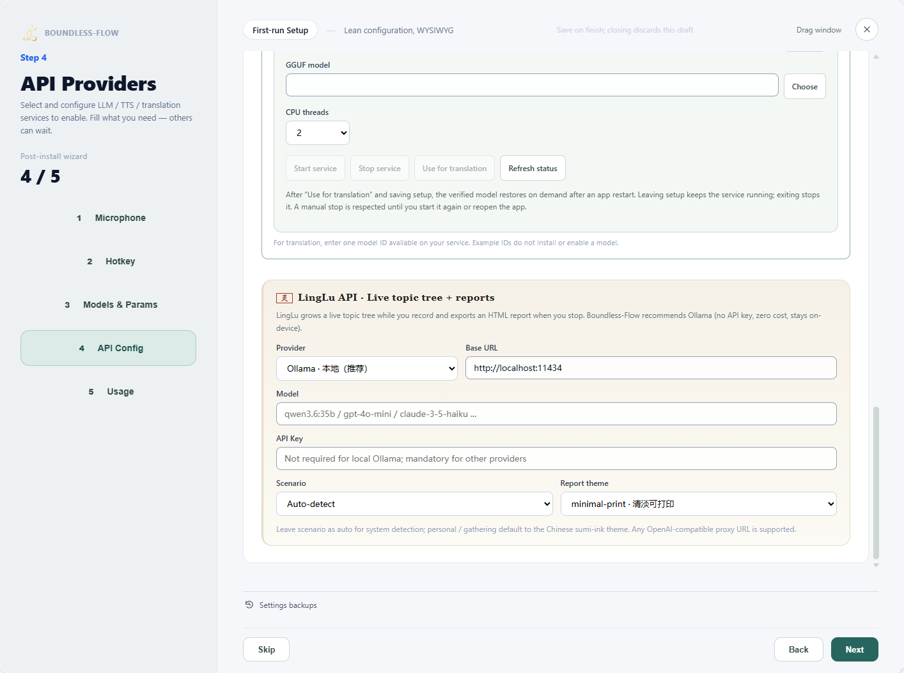
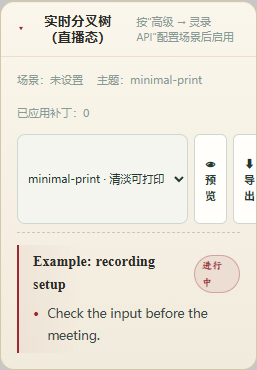

Scenario guide
LingLu: from topic tree to meeting report
Organize topics for your meeting scenario and export a reviewed report.
Part of Boundless Flow · ZimaBlueAI
What you will get
Inspect topic-to-passage links, review minutes and export a themed report.
Before you start
- A working saved meeting record, plus a separately configured LingLu API provider, available model and authentication.
- With Ollama, the service must be running and the entered model actually installed. An example name does not make a model available.
Step by step
- 01
Configure LingLu API
Under LingLu API in setup or advanced settings, choose a provider and enter a real model, endpoint and credentials. Select a suitable scenario such as personal recording, work meeting or academic discussion; choose explicitly if automatic selection is unsuitable. Save and test with a short recording.

Actual app UI · Select to enlarge; example data is not your result - 1Choose the service for meeting analysis.
- 2Enter a model available through the service.
- 3Choose a scenario appropriate for the meeting.
- 02
Inspect the topic tree during recording
After recording starts, open the meeting area and expand LingLu's live topic tree. Check topic links against transcript passages. Frequent updates add service calls; test a short session before a long meeting.

Actual app UI · Select to enlarge; example data is not your result - 03
Review facts and actions after stopping
Stop recording, select the saved session and review topics, summary, decisions and actions. Personal recordings do not need artificial business KPIs. Revise AI output that lacks support in the transcript.

Actual app UI · Select to enlarge; example data is not your result - 1Check the summary against the transcript.
- 2Check actions, owners and dates.
- 04
Choose a theme, preview and export
Open the LingLu panel and choose a report theme such as minimal-print. Select Preview to inspect content and layout, then Export and confirm its saved location. Embed in main window changes presentation, not export. Use the close control to close the panel.

Actual app UI · Select to enlarge; example data is not your result - 1Choose the report theme.
- 2Use the panel actions to preview or export.


How to verify success
The topic tree contains this session's data, minutes match the transcript, and the preview and exported report open.
If something goes wrong
LingLu is idle / no data
Check the selected record and LingLu provider, model, credentials and update settings. Working translation does not validate LingLu settings.
How do I resume after correcting LingLu API settings?
In Setup, correct the LingLu API provider, endpoint, model or key and confirm the settings have been saved. Return to LingLu and select Retry processing to resume the unfinished transcript without recording it again. New requests use the updated connection settings after the retry. Requests already being processed keep their original settings, as do the recording's scenario and language.
Theme or scenario is unsuitable
Choose a suitable meeting scenario and review content, then select the report theme. A theme changes presentation, not facts.